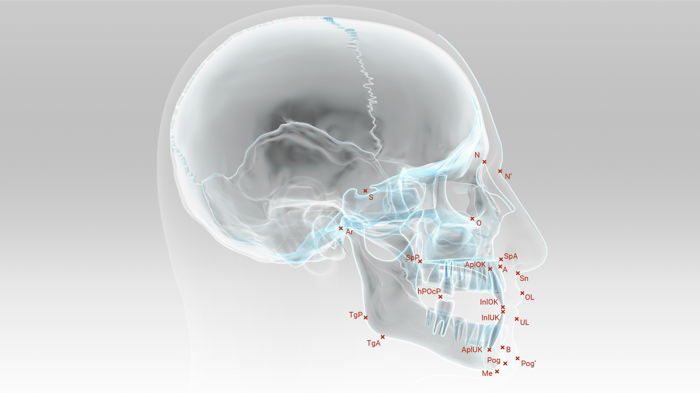
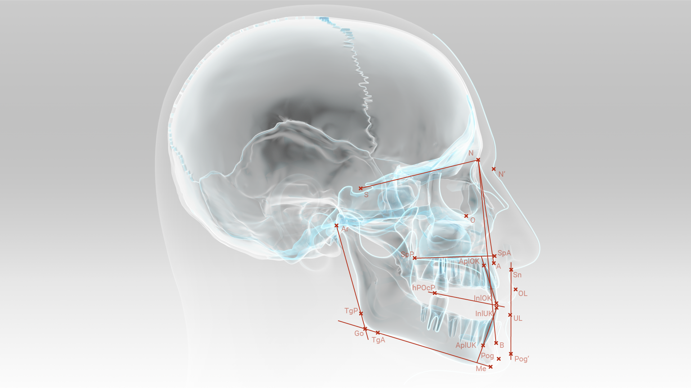
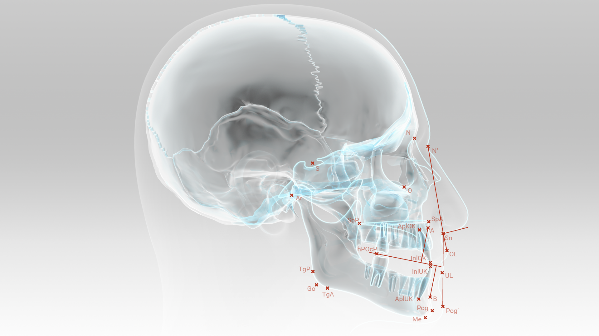

Die Auswertung des Fernröntgenseitenbildes ermöglicht eine „statische“ Beschrei-bung des Gesichtsschädelaufbaus mit Einlagerung der Dentition in der Sagittal-Vertikal-Ebene. Dabei ist es wesentlich zu verstehen, dass diagnostizierte individuel-le Abweichungen im FRS-Bild keinesfalls direkt zur Definition von Behandlungszielen verwendet werden können. Die Befunde dienen vielmehr primär zur:
Die Grenzen der Umsetzung dieser Befunde in Behandlungsaufgaben sind vor allem durch die eingeschränkten Möglichkeiten einer Beeinflussung der skelettalen Struktu-ren des Gesichtes gegeben.
Für die praktische Auswertung wird von dem angefertigten Röntgenbild zunächst eine Durchzeichnung erstellt. Auf dieser Zeichnung werden dann die kephalometri-schen Referenzpunkte markiert.

| Abkürzung | Referenzpunkt | Erklärung |
|---|---|---|
| N | Nasion | der am weitesten anterior gelegene Punkt der Sutura nasofrontalis |
| S | Sella-Punkt | Mittelpunkt der Sella turcica |
| SpA | Spina nas. ant. | Spina nasalis anterior |
| SpP | Spina nas. post. | Schnittpunkt der hinteren Kontur des Corpus maxillae mit dem Nasenboden |
| A | A-Punkt | tiefster Punkt der Einziehung im Bereich der anterioren Kontur des Processus alveolaris im Oberkiefer |
| B | B-Punkt | tiefster Punkt der Einziehung im Bereich der anterioren Kontur des Processus alveolaris im Unterkiefer |
| Me | Menton | am weitesten kaudal gelegener Punkt der Unterkiefersymphyse |
| Ar | Articulare | Schnittpunkt der dorsalen Kontur des Collum mandibulae mit der Kontur der kaudalen Schädelbasis. |
| TgP | Posteriorer Tangentenpunkt | Anlagepunkt einer Tangente von Ar an den Hinterrand des Ramus mandibulae im Bereich des Kieferwinkels |
| TgA | Anteriorer Tangentenpunkt | Anlagepunkt einer Tangente von Me an den Unterrand des Corpus mandibulae im Bereich des Kieferwinkels |
| Go | Gonion | Schnittpunkt der Linien Me-TgA und Ar-TgP |
| ApIOK | Apicale Incisivus OK | Wurzelspitze des am weitesten labial stehenden mittleren oberen Schneidezahns im Oberkiefer |
| InIOK | Incisale Incisivus OK | Spitze der incisalen Kante des am weitesten labial stehenden mittleren Schneidezahns im Oberkiefer |
| InIUK | Incisale Incisivus UK | Spitze der incisalen Kante des am weitesten labial stehenden mittleren Schneidezahns im Unterkiefer |
| ApIUK | Apicale Incisivus UK | Wurzelspitze des am weitesten labial stehenden mittleren Schneidezahns im Unterkiefer |
| hPOcP | hinterer Punkt des Occlusal-Planums | distale Höckerüberlappung der M1 |
| N´ | Weichteilnasion | Tiefste Einziehung zwischen Stirn und Nase |
| Pog´ | Weichteilpogonion | Vorderster Punkt des Weichteilkinns |
| OL/UL | Ober-/Unterlippenpunkt | Jeweils am Übergang vom Lippenrot zum Lippenweiß |
| Sn | Subnasale | Übergang vom Nasensteg zur Oberlippe |
Anschließend werden die für die Auswertung erforderlichen kephalometrischen Referenzlinien eingezeichnet

| Abkürzung | Referenzlinie | Erklärung |
|---|---|---|
| NSL | Nasion-Sella-Linie | Verbindung zwischen Nasion und Sella; sie dient als Hauptreferenzlinie |
| NL | Nasal-Linie | Oberkiefer-Basisebene = Spina-Ebene; Verbindungslinie zwischen SpA und SpP |
| ML | Mandibularlinie | Unterkiefer-Basislinie; Verbindungslinie zwischen Me und TgA |
| OE | Okklusionsebene | Verbindungslinie zwischen dem gemittelten Frontzahnüberbiss und der distalen Höckerüberlappung der M1. |
| IOK | Achse Oberkiefer-Front; Verbindung zwischen Schneidekante und Wurzelspitze der am weitesten protrudiert stehenden oberen 1er | |
| IUK | Achse Unterkiefer-Front; Verbindung zwischen Schneidekante und Wurzelspitze der am weitesten protrudiert stehenden unteren 1er | |
| Lippenprofillinie | Verbindungslinie Sn und Pog´ |

Bei der FRS-Auswertung unterscheidet man zwischen angulären Messungen (Winkel in Grad) und linearen Messungen (Strecken in mm). Die folgenden Angaben dienen einer klassifizierenden Interpretation der erhaltenen Messwerte.
| Abkürzung | Erklärung | |||||||||
|---|---|---|---|---|---|---|---|---|---|---|
| SNA | Winkel zwischen Sella, Nasion und A-Punkt. Der SNA-Winkel ist der Ausdruck für die sagittale Position der Maxilla gegenüber der Schädelbasis.
|
|||||||||
| SNB | Winkel zwischen Sella, Nasion und B-Punkt. Der SNB-Winkel ist der Ausdruck für die sagittale Position der Mandibula gegenüber der Schädelbasis.
|
|||||||||
| ANB | Winkel zwischen A-Punkt, Nasion, und B-Punkt (= SNA minus SNB). Der ANB-Winkel ist der Ausdruck für die sagittale Beziehung zwischen Maxilla und Mandibula.
|
|||||||||
| NL-NSL | Winkel zwischen der Nasal-Linie und der Nasion-Sella-Linie. Der NL-NSL-Winkel ist der Ausdruck für die Neigung der Maxilla zur Schädelbasis.
|
|||||||||
| ML-NSL | Winkel zwischen Mandibularlinie und Sella-Nasion-Linie: Der ML-NSL ist der Ausdruck der Neigung der Mandibula zur Schädelbasis.
|
|||||||||
| ML-NL | Basiswinkel; Neigung der Basen zueinander; Winkel zwischen Mandibularlinie und Nasal-Linie; Mittelwert (Standardabweichung) 23,5 (3) | |||||||||
| ArGoMe | Kieferwinkel; Winkel zwischen Articulare-Gonion-Menton. Dieser Winkel ist Ausdruck für die Lagebeziehung zwischen Cor-pus und Ramus der Mandibula. Dieser Winkel ist wichtig für die Prognose der Wachstumsrichtung. Große Werte deuten auf eine posteriore Wachstumsrotation mit mehr nach posterior gerichte-tem Kondylenwachstum, kleine Werte auf anteriore Wachstums-rotation der Mandibula mit mehr nach vertikal gerichtetem Kondylenwachstum hin. Mittelwert (Standardabweichung) 126 (10) | |||||||||
| IOK-NL | Winkel zwischen der Längsachse Oberkiefer-Frontzähne und der Nasal-Linie. Dieser Winkel dient zur Beurteilung der Achsenstellung der Schneidezähne auf der Maxilla. Der Winkel drückt das Ausmaß der Protrusion bzw. Retrusion dieser Zähne aus. Mittelwert (Standardabweichung) 112,5 (3) | |||||||||
| IUK-ML | Winkel zwischen der Längsachse Unterkiefer-Frontzähne und der Mandibularlinie. Dieser Winkel dient zur Beurteilung der Ach-senstellung der Schneidezähne auf der Mandibula. Mittelwert (Standardabweichung) 90 (3) | |||||||||
| IOK-IUK | Winkel zwischen den Längsachsen der Schei-dezähne in Ober- und Unterkiefer. Mittelwert (Standardabweichung) 131 (6) | |||||||||
| Gesichtskonvexität | Winkel zwischen Weichteilnasion, Subnasale und Weichteilpogonion (siehe 4.1 Extraorale Untersuchung). Mittelwert (Standardabweichung) 162 (6) | |||||||||
| Nasolabialwinkel | Winkel zwischen OL, Sn, und einer Tangente an den Nasensteg (siehe 4.1 Extraorale Untersuchung). Mittelwert (Standardabweichung) 110 (9) |
| Abkürzung | Erklärung | |||||||||
|---|---|---|---|---|---|---|---|---|---|---|
| WITS-appraisal | Abstand der Schnittpunkte der Lote der Punkte A und B auf die Okklusi-onsebene. Der WITS-Wert ermöglicht eine zusätzliche Aussage über die sagittale Beziehung von Oberkiefer und Unterkiefer in Abhängigkeit von der Neigung der Okklusionsebene.
|
|||||||||
| Lippenprotrusion | Abstand der Punkte OL und UL von der Lippenprofillinie. Die Winkel geben Auskunft über die Protrusion des Lippenprofils.
|
Die gemessenen Winkel und Strecken werden mit den Durchschnittswerten, die auf dem Auswertungsbogen angegeben sind, verglichen. Zur Quantifizierung einer Abweichung wird beurteilt, wie weit ein Messwert vom jeweiligen Mittelwert (MW) abweicht. Die Standardabweichung (SD) gibt die Streuung der Messwerte um den Mittelwert an und ist in der Regel für jeden Parameter unterschiedlich. Im Bereich ±1 Standardab-weichung um den Mittelwert sind etwa 66 % aller Fälle zu erwarten. Der Ausprägungsgrad der Abweichung eines kephalometrischen Messwertes vom Mittelwert wird in sieben Gewichtungskategorien eingeteilt. Dabei wird jeweils erfasst, ob der Wert innerhalb der Standardabweichung oder mehr als 1, 2 oder 3 Stan-dardabweichungen vom jeweiligen Mittelwert differiert.
| x ≤ (MW – 3 SD) | ⇔ | Wert extrem klein |
| (MW – 3 SD) < x ≤ (MW – 2 SD) | ⇔ | Wert klein (manifest) |
| (MW – 2 SD) < x ≤ (MW – 1 SD) | ⇔ | Wert tendenziell klein |
| (MW – 1 SD) < x < (MW + 1 SD) | ⇔ | mittelwertig |
| (MW + 1 SD) ≤ x < (MW + 2 SD) | ⇔ | Wert tendenziell groß |
| (MW + 2 SD) ≤ x < (MW + 3 SD) | ⇔ | Wert groß (manifest) |
| (MW + 3 SD) ≤ x | ⇔ | Wert extrem groß |
Dabei soll nochmals wiederholt werden, dass diagnostizierte individuelle Ab-weichungen im FRS-Bild keinesfalls direkt zur Definition von Behandlungszie-len verwendet werden können.
Für die sagittale Diagnose wird die Anordnung der Maxilla und der Mandibula in Relation zur Schädelbasis sowie relativ zueinander mit Hilfe der sagittalen Referenz- werte SNA, SNB und ANB herangezogen. Auch der WITS-Wert geht hier in die Diagnose ein.
Für die Diagnose in der Vertikalen verwenden wir als Anhaltspunkt die Neigung von Maxilla und Mandibula zur Schädelbasis sowie zueinander unter Verwendung der Winkel NL-NSL, ML-NSL und ML-NL.
Unter der Diagnose Dentale Relation werden die Stellung der oberen und unteren Frontzähne zu ihrer jeweiligen Kieferbasis sowie zueinander beschrieben mit Hilfe der Messwerte für IOK-NL, IUK-NL und IOK-IUK.
Für die Diagnose der Weichteilrelation werden die Messungen für die Gesichtskon-vexität, den Nasolabialwinkel sowie für die Lippenprotrusion herangezogen.